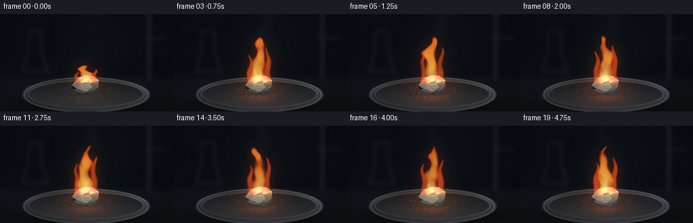
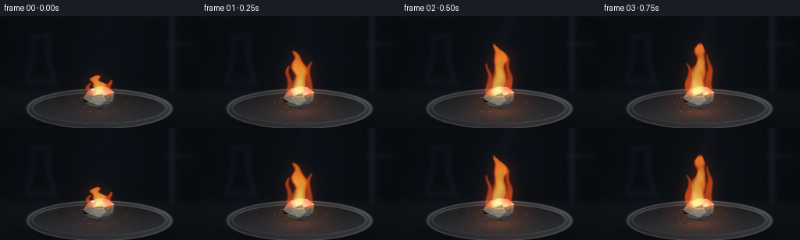

CODING AGENTS AS PIXEL WORLD MODELS
traex/GPT-6.1-Sol · material_0006
点击播放 · 原生 RGB 像素
逐轮保存的候选
回放视频、检查图与代码变化。
每份候选均可单独播放。实际图片检查记录在下方工具轨迹中。
候选 01播放与检查图
点击播放 · 原生 RGB 像素


展开代码变化
--- 上一保存版本
+++ 本次保存版本
@@ -0,0 +1,214 @@
+"""Procedural macro footage of calcium burning with its orange-red flame.
+Only local analytic geometry, continuous noise, and RGB compositing are used.
+"""
+from pathlib import Path
+import json
+import numpy as np
+from PIL import Image, ImageDraw, ImageFilter
+import artifact_io
+
+ROOT = Path(__file__).resolve().parent
+SPEC = json.loads((ROOT/'task_spec.json').read_text())
+W,H = SPEC['width'],SPEC['height']
+S = 3
+w,h = W*S,H*S
+Y,X = np.mgrid[0:h,0:w].astype(np.float32)/S
+rng = np.random.default_rng(202611)
+
+# Deterministic, smoothly interpolated multiscale noise; no image assets.
+grids = [rng.random((128,128)).astype(np.float32) for _ in range(8)]
+def noise(x,y,layer=0):
+ xi=np.floor(x).astype(np.int32); yi=np.floor(y).astype(np.int32)
+ xf=x-xi; yf=y-yi
+ xf=xf*xf*(3-2*xf); yf=yf*yf*(3-2*yf)
+ g=grids[layer%len(grids)]
+ a=g[yi%128,xi%128]*(1-xf)+g[yi%128,(xi+1)%128]*xf
+ b=g[(yi+1)%128,xi%128]*(1-xf)+g[(yi+1)%128,(xi+1)%128]*xf
+ return a*(1-yf)+b*yf
+
+def mask_poly(points):
+ im=Image.new('L',(w,h))
+ ImageDraw.Draw(im).polygon([(round(x*S),round(y*S)) for x,y in points],fill=255)
+ return np.asarray(im,dtype=np.float32)/255
+
+def composite(dst,color,alpha):
+ a=np.clip(alpha,0,1)[...,None]
+ return dst*(1-a)+np.asarray(color,dtype=np.float32)*a
+
+def blur(arr,radius):
+ return np.asarray(Image.fromarray(np.uint8(np.clip(arr,0,1)*255)).filter(ImageFilter.GaussianBlur(radius*S)),dtype=np.float32)/255
+
+# Dark, softly resolved bench and out-of-focus laboratory background.
+background=np.zeros((h,w,3),np.float32)
+ambient=0.65+0.35*np.exp(-((X-116)/145)**2-((Y-58)/105)**2)
+background[:]=np.array([10,14,19])*ambient[...,None]
+background+=noise(X/70,Y/50,2)[...,None]*np.array([3,4,5])
+bench=np.clip((Y-88)/11,0,1)
+background=composite(background,[21,24,27],bench*.64)
+# A vague steel support and glassware, deliberately defocused.
+bgim=Image.new('RGB',(w,h),(0,0,0)); d=ImageDraw.Draw(bgim)
+def line(points,fill,width):
+ d.line([(int(x*S),int(y*S)) for x,y in points],fill=fill,width=max(1,int(width*S)))
+line([(220,-10),(220,95)],(20,25,31),4)
+line([(214,35),(246,35)],(21,25,29),2)
+line([(34,84),(42,55),(42,25)],(16,23,29),2)
+line([(42,25),(61,25),(61,55),(70,84)],(17,24,29),2)
+line([(33,85),(72,85)],(17,22,27),2)
+background+=np.asarray(bgim.filter(ImageFilter.GaussianBlur(3*S)),np.float32)
+texture=(noise(X*2.1,Y*2.1,1)-.5)*1.8
+background+=texture[...,None]*bench[...,None]
+
+# An elliptical porcelain combustion dish, seen at a low macro angle.
+cx,cy=127.,119.
+rout=np.sqrt(((X-cx)/94)**2+((Y-cy)/26)**2)
+rin=np.sqrt(((X-cx)/85)**2+((Y-(cy-1))/19.5)**2)
+shadow=np.exp(-((X-128)/95)**2-((Y-136)/10)**2)*.62
+background*=1-shadow[...,None]
+body=np.clip((1.02-rout)*40,0,1)
+# The outer rim and gently rounded porcelain wall.
+porcelain=(40+15*np.exp(-((Y-108)/7)**2)+15*np.clip((X-28)/160,0,1))
+basecolors=np.stack([porcelain*.93,porcelain*.99,porcelain*1.07],axis=-1)
+basecolors+=(noise(X*.65,Y*.65,0)-.5)[...,None]*3
+static=composite(background,basecolors,body)
+edge=np.exp(-((rout-.971)/.014)**2)
+static+=edge[...,None]*np.array([33,34,35])
+interior=np.clip((1-rin)*25,0,1)
+# The dish floor recedes into shadow at the back and is glazed toward the front.
+floorbrightness=28+17*np.clip((Y-103)/30,0,1)+4*noise(X*.35,Y*.35,3)
+floorcolor=np.stack([floorbrightness*.99,floorbrightness*1.03,floorbrightness*1.10],axis=-1)
+static=composite(static,floorcolor,interior)
+innerlip=np.exp(-((rin-1.01)/.022)**2)*body
+static+=innerlip[...,None]*np.array([17,17,17])
+# Small mineral/oxide crumbs, subtle and not cartoon outlines.
+crumbim=Image.new('RGBA',(w,h));cd=ImageDraw.Draw(crumbim)
+for _ in range(32):
+ xx=float(rng.uniform(94,163)); yy=float(rng.uniform(104,127)); rr=float(rng.uniform(.15,.65))
+ col=int(rng.uniform(72,126))
+ cd.ellipse(((xx-rr)*S,(yy-rr*.5)*S,(xx+rr)*S,(yy+rr*.5)*S), fill=(col,col,col-4,210))
+crumb=np.asarray(crumbim,dtype=np.float32)
+static=composite(static,crumb[...,:3],crumb[...,3]/255)
+# Calcium is an angular, irregular silvery-gray metal chip, not a coal ember.
+facets=[
+ ([(108,103),(115,94),(126,90),(132,96),(120,103)],(137,142,143)),
+ ([(126,90),(137,91),(146,98),(132,102),(132,96)],(174,176,169)),
+ ([(115,94),(120,103),(113,110),(106,105)],(87,94,95)),
+ ([(120,103),(132,102),(137,108),(127,115),(113,110)],(116,120,113)),
+ ([(132,102),(146,98),(145,108),(137,113),(127,115),(137,108)],(72,78,75)),
+ ([(115,94),(124,90),(130,92),(123,96)],(193,194,183)),
+ ([(113,110),(127,115),(127,118),(114,115),(109,111)],(65,70,67)),
+ ([(127,115),(137,113),(145,108),(142,115),(132,120),(127,118)],(47,52,51)),
+]
+piece_mask=mask_poly([(106,105),(115,94),(126,90),(137,91),(146,98),(145,108),(142,115),(132,120),(114,115),(109,111)])
+piecedata=np.zeros_like(static)
+for points,col in facets:
+ m=mask_poly(points)
+ facetgrain=1+(noise(X*2.6,Y*2.6,5)-.5)*.19+(noise(X*.6,Y*.6,6)-.5)*.21
+ piecedata=composite(piecedata,np.array(col)[None,None,:]*facetgrain[...,None],m)
+# Thin fissures, cleavage edges and dull oxidized speckles.
+crackim=Image.new('RGBA',(w,h));cd=ImageDraw.Draw(crackim)
+for points in [[(119,94),(122,99),(120,103),(123,107)],[(132,92),(134,96),(132,102)],[(113,110),(120,112),(127,115)],[(137,108),(141,105),(144,104)]]:
+ cd.line([(int(x*S),int(y*S)) for x,y in points],fill=(33,39,35,105),width=1)
+for _ in range(65):
+ xx=float(rng.uniform(109,144));yy=float(rng.uniform(92,116));rr=float(rng.uniform(.15,.5))
+ cc=int(rng.uniform(165,218))
+ cd.ellipse(((xx-rr)*S,(yy-rr)*S,(xx+rr)*S,(yy+rr)*S),fill=(cc,cc,cc-7,90))
+cracks=np.asarray(crackim,np.float32)
+piecedata=composite(piecedata,cracks[...,:3],cracks[...,3]/255*piece_mask)
+
+
+def render(index):
+ t=index/SPEC['fps']
+ # An ignition develops promptly, then sustains a consistent flame size.
+ start=0.36+0.64*(1-np.exp(-t*4.8))
+ flicker=1+.035*np.sin(t*8.1)+.025*np.sin(t*13.9+.8)
+ height=72*start*flicker
+ base=101.5
+ p=(base-Y)/height
+ pc=np.clip(p,0,1)
+ n1=noise(X/11+np.sin(Y/19+t)*.65,Y/17+t*3.6,0)
+ n2=noise(X/5.5,Y/9+t*6.0,4)
+ n3=noise(X/2.4,Y/5+t*8.3,7)
+ eddy=.52*(n1-.5)+.24*(n2-.5)+.09*(n3-.5)
+ # Height-dependent centerline and changing widths form advected flame tongues.
+ center=126+pc*(5.6*np.sin(pc*5.9-t*3.8)+2.4*np.sin(pc*15+t*6.2))
+ width=(13.5*(1-pc)**.64+1.1)*(1+.19*np.sin(pc*16-t*7.5))
+ width*=.87+.13*start
+ r=np.abs((X-center)/width)
+ field=1-r**1.65+eddy*(.65+pc*1.7)
+ gate=np.clip(p*10+.5,0,1)*np.clip((1-p)*16,0,1)
+ alpha=np.clip(field*1.65,0,1)*gate
+ # Side licks spring from the hot metal and separate in the rising flow.
+ for j,(bx,hh,ww) in enumerate([(115,46,6.2),(138,55,6.5)]):
+ ph=(base-Y)/(hh*start*(1+.05*np.sin(t*7+j)))
+ q=np.clip(ph,0,1)
+ cc=bx+q*(3*np.sin(q*8-t*5+j)+(-2 if j==0 else 2))
+ rad=ww*(1-q)**.65+.3
+ ff=1-np.abs((X-cc)/rad)**1.8+eddy*.9
+ aa=np.clip(ff*1.5,0,1)*np.clip(ph*9+.3,0,1)*np.clip((1-ph)*14,0,1)
+ alpha=np.maximum(alpha,aa*.8)
+ # Small internal variations give transparent volume, not a flat solid silhouette.
+ alpha*=.68+.24*n1+.08*n2
+ softalpha=blur(alpha,.30)
+ glow=blur(alpha,8.0)
+ largeglow=blur(alpha,18)
+ frame=static.copy()
+ # Warm illumination on the dish and bench remains correlated with burning.
+ light=np.exp(-((X-128)/40)**2-((Y-110)/25)**2)*start*flicker
+ frame+=light[...,None]*np.array([38,13,3])*(body[...,None]*.9+.1)
+ reflected=np.exp(-((X-127)/24)**2-((Y-124)/5)**2)*start
+ frame+=reflected[...,None]*np.array([30,9,2])*interior[...,None]
+ # The metal stays fixed; oxidation and heating evolve slowly.
+ rock=piecedata.copy()
+ heat=np.exp(-((Y-95)/8)**2)*(.38+.60*start)
+ grain=noise(X*.8,Y*.8,2)
+ oxidation=np.clip(t*.045,0,.25)*(0.4+grain)
+ rock=rock*(1-oxidation[...,None])+np.array([196,187,162])*oxidation[...,None]
+ rock+=heat[...,None]*np.array([124,57,14])
+ frame=composite(frame,rock,piece_mask)
+ # Incandescent pinpoints on the reacting top edge.
+ hot=(np.exp(-((X-121)/4.1)**2-((Y-96)/2)**2)+np.exp(-((X-136)/3.2)**2-((Y-98)/2.2)**2))
+ hot*=piece_mask*start*(.85+.15*np.sin(t*12))
+ frame+=hot[...,None]*np.array([136,116,67])
+ # Very fine, translucent oxide fume above the flame, largely out of focus.
+ smoke_center=129+11*np.sin((28-Y)/33+t*.7)
+ smoke=np.exp(-((X-smoke_center)/9)**2)*np.exp(-((Y-16)/25)**2)
+ smoke*=np.clip((35-Y)/16,0,1)*(0.02+.035*noise(X/13,Y/17+t*.6,5))*start
+ frame=composite(frame,[129,136,140],smoke)
+ frame+=glow[...,None]*np.array([69,20,4])+largeglow[...,None]*np.array([21,7,2])
+ # Calcium's characteristic brick-red/orange envelope and pale hot center.
+ intensity=np.clip(field,0,1)
+ core=np.clip((intensity-.30)/.70,0,1)*(1-.56*pc)
+ flamecolor=np.empty_like(frame)
+ flamecolor[...,0]=255
+ flamecolor[...,1]=65+122*core+31*(1-pc)
+ flamecolor[...,2]=14+52*core+31*(1-pc)**3
+ # A narrow white-yellow basal reaction zone, with orange-red edges above it.
+ basal=np.exp(-((Y-98)/7)**2)*np.exp(-((X-127)/9.5)**2)
+ flamecolor[...,1]+=basal*58
+ flamecolor[...,2]+=basal*104
+ flamecolor=np.clip(flamecolor,0,255)
+ frame=composite(frame,flamecolor,softalpha*.91)
+ # Bright internal threads are warped by the same upward flow as the envelope.
+ thread=np.exp(-((X-(center-2.5+3*np.sin(p*12-t*7)))/(width*.31+.1))**2)
+ thread*=np.clip(1-p*1.36,0,1)*softalpha*(.25+.20*n2)
+ frame=composite(frame,[255,216,136],thread)
+ # Occasional tiny incandescent particles, not a shower of generic sparks.
+ for k in range(3):
+ age=(t*.85+k*.37)%1
+ sx=123+k*5+5*np.sin(age*5+k)
+ sy=97-age*(31+7*k)
+ visibility=np.sin(np.pi*age)**1.5*.6*start
+ spark=np.exp(-((X-sx)/.40)**2-((Y-sy)/.73)**2)*visibility
+ frame+=spark[...,None]*np.array([175,84,19])
+ # Lens falloff and restrained fine sensor grain unify the scene.
+ vignette=1-.17*((X-127)/155)**2-.11*((Y-75)/120)**2
+ frame*=np.clip(vignette,.65,1)[...,None]
+ frame=np.clip(frame,0,255)
+ image=Image.fromarray(frame.astype(np.uint8)).resize((W,H),Image.Resampling.LANCZOS)
+ out=np.asarray(image,dtype=np.float32)
+ sensor=np.random.default_rng(730+index).normal(0,.48,(H,W,1))
+ return np.clip(out+sensor,0,255).astype(np.uint8)
+
+frames=np.stack([render(i) for i in range(SPEC['frames'])])
+artifact_io.save(frames, ROOT)
+print(f'Saved {len(frames)} RGB frames, {W}Ã{H}, {SPEC["fps"]} fps to {ROOT}')
可观测工具轨迹
实际执行的命令与返回图片。
命令 1exit 0
/bin/bash -lc "ls -la && cat prompt.txt && printf '\\n---RULES---\\n' && cat GENERATION_RULES.md && printf '\\n---SPEC---\\n' && cat task_spec.json"
命令 2exit 0
/bin/bash -lc "cat artifact_io.py && printf '\\n---PACKAGES---\\n' && python - <<'PY'
import numpy,PIL
print('numpy',numpy.__version__,'Pillow',PIL.__version__)
PY"命令 3exit 0
/bin/bash -lc "cat > generate.py <<'PY'
\"\"\"Procedural macro footage of calcium burning with its orange-red flame.
Only local analytic geometry, continuous noise, and RGB compositing are used.
\"\"\"
from pathlib import Path
import json
import numpy as np
from PIL import Image, ImageDraw, ImageFilter
import artifact_io
ROOT = Path(__file__).resolve().parent
SPEC = json.loads((ROOT/'task_spec.json').read_text())
W,H = SPEC['width'],SPEC['height']
S = 3
w,h = W*S,H*S
Y,X = np.mgrid[0:h,0:w].astype(np.float32)/S
rng = np.random.default_rng(202611)
# Deterministic, smoothly interpolated multiscale noise; no image assets.
grids = [rng.random((128,128)).astype(np.float32) for _ in range(8)]
def noise(x,y,layer=0):
xi=np.floor(x).astype(np.int32); yi=np.floor(y).astype(np.int32)
xf=x-xi; yf=y-yi
xf=xf*xf*(3-2*xf); yf=yf*yf*(3-2*yf)
g=grids[layer%len(grids)]
a=g[yi%128,xi%128]*(1-xf)+g[yi%128,(xi+1)%128]*xf
b=g[(yi+1)%128,xi%128]*(1-xf)+g[(yi+1)%128,(xi+1)%128]*xf
return a*(1-yf)+b*yf
def mask_poly(points):
im=Image.new('L',(w,h))
ImageDraw.Draw(im).polygon([(round(x*S),round(y*S)) for x,y in points],fill=255)
return np.asarray(im,dtype=np.float32)/255
def composite(dst,color,alpha):
a=np.clip(alpha,0,1)[...,None]
return dst*(1-a)+np.asarray(color,dtype=np.float32)*a
def blur(arr,radius):
return np.asarray(Image.fromarray(np.uint8(np.clip(arr,0,1)*255)).filter(ImageFilter.GaussianBlur(radius*S)),dtype=np.float32)/255
# Dark, softly resolved bench and out-of-focus laboratory background.
background=np.zeros((h,w,3),np.float32)
ambient=0.65+0.35*np.exp(-((X-116)/145)**2-((Y-58)/105)**2)
background[:]=np.array([10,14,19])*ambient[...,None]
background+=noise(X/70,Y/50,2)[...,None]*np.array([3,4,5])
bench=np.clip((Y-88)/11,0,1)
background=composite(background,[21,24,27],bench*.64)
# A vague steel support and glassware, deliberately defocused.
bgim=Image.new('RGB',(w,h),(0,0,0)); d=ImageDraw.Draw(bgim)
def line(points,fill,width):
d.line([(int(x*S),int(y*S)) for x,y in points],fill=fill,width=max(1,int(width*S)))
line([(220,-10),(220,95)],(20,25,31),4)
line([(214,35),(246,35)],(21,25,29),2)
line([(34,84),(42,55),(42,25)],(16,23,29),2)
line([(42,25),(61,25),(61,55),(70,84)],(17,24,29),2)
line([(33,85),(72,85)],(17,22,27),2)
background+=np.asarray(bgim.filter(ImageFilter.GaussianBlur(3*S)),np.float32)
texture=(noise(X*2.1,Y*2.1,1)-.5)*1.8
background+=texture[...,None]*bench[...,None]
# An elliptical porcelain combustion dish, seen at a low macro angle.
cx,cy=127.,119.
rout=np.sqrt(((X-cx)/94)**2+((Y-cy)/26)**2)
rin=np.sqrt(((X-cx)/85)**2+((Y-(cy-1))/19.5)**2)
shadow=np.exp(-((X-128)/95)**2-((Y-136)/10)**2)*.62
background*=1-shadow[...,None]
body=np.clip((1.02-rout)*40,0,1)
# The outer rim and gently rounded porcelain wall.
porcelain=(40+15*np.exp(-((Y-108)/7)**2)+15*np.clip((X-28)/160,0,1))
basecolors=np.stack([porcelain*.93,porcelain*.99,porcelain*1.07],axis=-1)
basecolors+=(noise(X*.65,Y*.65,0)-.5)[...,None]*3
static=composite(background,basecolors,body)
edge=np.exp(-((rout-.971)/.014)**2)
static+=edge[...,None]*np.array([33,34,35])
interior=np.clip((1-rin)*25,0,1)
# The dish floor recedes into shadow at the back and is glazed toward the front.
floorbrightness=28+17*np.clip((Y-103)/30,0,1)+4*noise(X*.35,Y*.35,3)
floorcolor=np.stack([floorbrightness*.99,floorbrightness*1.03,floorbrightness*1.10],axis=-1)
static=composite(static,floorcolor,interior)
innerlip=np.exp(-((rin-1.01)/.022)**2)*body
static+=innerlip[...,None]*np.array([17,17,17])
# Small mineral/oxide crumbs, subtle and not cartoon outlines.
crumbim=Image.new('RGBA',(w,h));cd=ImageDraw.Draw(crumbim)
for _ in range(32):
xx=float(rng.uniform(94,163)); yy=float(rng.uniform(104,127)); rr=float(rng.uniform(.15,.65))
col=int(rng.uniform(72,126))
cd.ellipse(((xx-rr)*S,(yy-rr*.5)*S,(xx+rr)*S,(yy+rr*.5)*S), fill=(col,col,col-4,210))
crumb=np.asarray(crumbim,dtype=np.float32)
static=composite(static,crumb[...,:3],crumb[...,3]/255)
# Calcium is an angular, irregular silvery-gray metal chip, not a coal ember.
facets=[
([(108,103),(115,94),(126,90),(132,96),(120,103)],(137,142,143)),
([(126,90),(137,91),(146,98),(132,102),(132,96)],(174,176,169)),
([(115,94),(120,103),(113,110),(106,105)],(87,94,95)),
([(120,103),(132,102),(137,108),(127,115),(113,110)],(116,120,113)),
([(132,102),(146,98),(145,108),(137,113),(127,115),(137,108)],(72,78,75)),
([(115,94),(124,90),(130,92),(123,96)],(193,194,183)),
([(113,110),(127,115),(127,118),(114,115),(109,111)],(65,70,67)),
([(127,115),(137,113),(145,108),(142,115),(132,120),(127,118)],(47,52,51)),
]
piece_mask=mask_poly([(106,105),(115,94),(126,90),(137,91),(146,98),(145,108),(142,115),(132,120),(114,115),(109,111)])
piecedata=np.zeros_like(static)
for points,col in facets:
m=mask_poly(points)
facetgrain=1+(noise(X*2.6,Y*2.6,5)-.5)*.19+(noise(X*.6,Y*.6,6)-.5)*.21
piecedata=composite(piecedata,np.array(col)[None,None,:]*facetgrain[...,None],m)
# Thin fissures, cleavage edges and dull oxidized speckles.
crackim=Image.new('RGBA',(w,h));cd=ImageDraw.Draw(crackim)
for points in [[(119,94),(122,99),(120,103),(123,107)],[(132,92),(134,96),(132,102)],[(113,110),(120,112),(127,115)],[(137,108),(141,105),(144,104)]]:
cd.line([(int(x*S),int(y*S)) for x,y in points],fill=(33,39,35,105),width=1)
for _ in range(65):
xx=float(rng.uniform(109,144));yy=float(rng.uniform(92,116));rr=float(rng.uniform(.15,.5))
cc=int(rng.uniform(165,218))
cd.ellipse(((xx-rr)*S,(yy-rr)*S,(xx+rr)*S,(yy+rr)*S),fill=(cc,cc,cc-7,90))
cracks=np.asarray(crackim,np.float32)
piecedata=composite(piecedata,cracks[...,:3],cracks[...,3]/255*piece_mask)
def render(index):
t=index/SPEC['fps']
# An ignition develops promptly, then sustains a consistent flame size.
start=0.36+0.64*(1-np.exp(-t*4.8))
flicker=1+.035*np.sin(t*8.1)+.025*np.sin(t*13.9+.8)
height=72*start*flicker
base=101.5
p=(base-Y)/height
pc=np.clip(p,0,1)
n1=noise(X/11+np.sin(Y/19+t)*.65,Y/17+t*3.6,0)
n2=noise(X/5.5,Y/9+t*6.0,4)
n3=noise(X/2.4,Y/5+t*8.3,7)
eddy=.52*(n1-.5)+.24*(n2-.5)+.09*(n3-.5)
# Height-dependent centerline and changing widths form advected flame tongues.
center=126+pc*(5.6*np.sin(pc*5.9-t*3.8)+2.4*np.sin(pc*15+t*6.2))
width=(13.5*(1-pc)**.64+1.1)*(1+.19*np.sin(pc*16-t*7.5))
width*=.87+.13*start
r=np.abs((X-center)/width)
field=1-r**1.65+eddy*(.65+pc*1.7)
gate=np.clip(p*10+.5,0,1)*np.clip((1-p)*16,0,1)
alpha=np.clip(field*1.65,0,1)*gate
# Side licks spring from the hot metal and separate in the rising flow.
for j,(bx,hh,ww) in enumerate([(115,46,6.2),(138,55,6.5)]):
ph=(base-Y)/(hh*start*(1+.05*np.sin(t*7+j)))
q=np.clip(ph,0,1)
cc=bx+q*(3*np.sin(q*8-t*5+j)+(-2 if j==0 else 2))
rad=ww*(1-q)**.65+.3
ff=1-np.abs((X-cc)/rad)**1.8+eddy*.9
aa=np.clip(ff*1.5,0,1)*np.clip(ph*9+.3,0,1)*np.clip((1-ph)*14,0,1)
alpha=np.maximum(alpha,aa*.8)
# Small internal variations give transparent volume, not a flat solid silhouette.
alpha*=.68+.24*n1+.08*n2
softalpha=blur(alpha,.30)
glow=blur(alpha,8.0)
largeglow=blur(alpha,18)
frame=static.copy()
# Warm illumination on the dish and bench remains correlated with burning.
light=np.exp(-((X-128)/40)**2-((Y-110)/25)**2)*start*flicker
frame+=light[...,None]*np.array([38,13,3])*(body[...,None]*.9+.1)
reflected=np.exp(-((X-127)/24)**2-((Y-124)/5)**2)*start
frame+=reflected[...,None]*np.array([30,9,2])*interior[...,None]
# The metal stays fixed; oxidation and heating evolve slowly.
rock=piecedata.copy()
heat=np.exp(-((Y-95)/8)**2)*(.38+.60*start)
grain=noise(X*.8,Y*.8,2)
oxidation=np.clip(t*.045,0,.25)*(0.4+grain)
rock=rock*(1-oxidation[...,None])+np.array([196,187,162])*oxidation[...,None]
rock+=heat[...,None]*np.array([124,57,14])
frame=composite(frame,rock,piece_mask)
# Incandescent pinpoints on the reacting top edge.
hot=(np.exp(-((X-121)/4.1)**2-((Y-96)/2)**2)+np.exp(-((X-136)/3.2)**2-((Y-98)/2.2)**2))
hot*=piece_mask*start*(.85+.15*np.sin(t*12))
frame+=hot[...,None]*np.array([136,116,67])
# Very fine, translucent oxide fume above the flame, largely out of focus.
smoke_center=129+11*np.sin((28-Y)/33+t*.7)
smoke=np.exp(-((X-smoke_center)/9)**2)*np.exp(-((Y-16)/25)**2)
smoke*=np.clip((35-Y)/16,0,1)*(0.02+.035*noise(X/13,Y/17+t*.6,5))*start
frame=composite(frame,[129,136,140],smoke)
frame+=glow[...,None]*np.array([69,20,4])+largeglow[...,None]*np.array([21,7,2])
# Calcium's characteristic brick-red/orange envelope and pale hot center.
intensity=np.clip(field,0,1)
core=np.clip((intensity-.30)/.70,0,1)*(1-.56*pc)
flamecolor=np.empty_like(frame)
flamecolor[...,0]=255
flamecolor[...,1]=65+122*core+31*(1-pc)
flamecolor[...,2]=14+52*core+31*(1-pc)**3
# A narrow white-yellow basal reaction zone, with orange-red edges above it.
basal=np.exp(-((Y-98)/7)**2)*np.exp(-((X-127)/9.5)**2)
flamecolor[...,1]+=basal*58
flamecolor[...,2]+=basal*104
flamecolor=np.clip(flamecolor,0,255)
frame=composite(frame,flamecolor,softalpha*.91)
# Bright internal threads are warped by the same upward flow as the envelope.
thread=np.exp(-((X-(center-2.5+3*np.sin(p*12-t*7)))/(width*.31+.1))**2)
thread*=np.clip(1-p*1.36,0,1)*softalpha*(.25+.20*n2)
frame=composite(frame,[255,216,136],thread)
# Occasional tiny incandescent particles, not a shower of generic sparks.
for k in range(3):
age=(t*.85+k*.37)%1
sx=123+k*5+5*np.sin(age*5+k)
sy=97-age*(31+7*k)
visibility=np.sin(np.pi*age)**1.5*.6*start
spark=np.exp(-((X-sx)/.40)**2-((Y-sy)/.73)**2)*visibility
frame+=spark[...,None]*np.array([175,84,19])
# Lens falloff and restrained fine sensor grain unify the scene.
vignette=1-.17*((X-127)/155)**2-.11*((Y-75)/120)**2
frame*=np.clip(vignette,.65,1)[...,None]
frame=np.clip(frame,0,255)
image=Image.fromarray(frame.astype(np.uint8)).resize((W,H),Image.Resampling.LANCZOS)
out=np.asarray(image,dtype=np.float32)
sensor=np.random.default_rng(730+index).normal(0,.48,(H,W,1))
return np.clip(out+sensor,0,255).astype(np.uint8)
frames=np.stack([render(i) for i in range(SPEC['frames'])])
artifact_io.save(frames, ROOT)
print(f'Saved {len(frames)} RGB frames, {W}Ã{H}, {SPEC[\"fps\"]} fps to {ROOT}')
PY
python generate.py"命令 4exit 0
/bin/bash -lc 'command -v ffmpeg || true'
命令 5exit 0
/bin/bash -lc "python - <<'PY'
from pathlib import Path
import numpy as np
from PIL import Image
p=Path('.')
a=np.load('pixels.npz')['pixels']
assert a.shape==(144,256,20)
files=sorted((p/'frames').glob('*.png'))
assert len(files)==20
for f in files:
im=Image.open(f)
assert im.mode=='RGB' and im.size==(256,144)
assert all((p/f).is_file() for f in ['index.html','inspection.png','transition_check.png','generate.py'])
print('Validated: 20 RGB frames at 256x144; playback and inspection artifacts present.')
print('Adjacent frames differ:',all(np.any(a[:,:,i]"'!=a[:,:,i-1]) for i in range(1,20)))
PY'保存候选 1 份；完成命令 5 次；可验证图片返回 0 张。原始 API 响应与完整日志保留在本地。